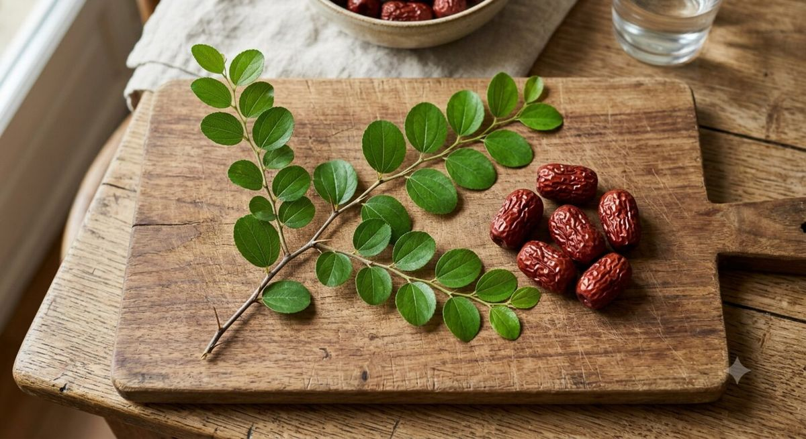

Un même genre botanique, plusieurs espèces bien distinctes
Le genre Ziziphus compte une cinquantaine d'espèces d'arbustes et de petits arbres épineux, appartenant à la famille des Rhamnacées. Plusieurs d'entre elles sont désignées, selon les régions et les langues, par le mot arabe « sidr » (سدر) ou par le mot français « jujubier ». C'est cette superposition de noms vernaculaires sur des espèces différentes qui crée la confusion — y compris chez de nombreux vendeurs de cosmétiques naturels.
Une revue scientifique consacrée à cinq espèces du genre le rappelle bien : Ziziphus spina-christi, Ziziphus lotus, Ziziphus mucronata, Ziziphus mauritiana et Ziziphus jujuba (parfois classée Ziziphus sativa) sont étudiées séparément précisément parce qu'elles diffèrent par leur répartition géographique, leur morphologie et, dans une certaine mesure, leur composition phytochimique (MediRes Online, revue phytopharmacologique).
Ziziphus spina-christi : le « sidr » du Levant et de la péninsule Arabique
C'est l'espèce que l'on associe le plus directement au mot « sidr » au Moyen-Orient. Le Christ's thorn jujube (jujubier du Christ) est un arbre épineux à feuillage persistant, natif du Levant, de la Mésopotamie et de l'Afrique de l'Est, que l'on retrouve aujourd'hui en Israël, en Jordanie, en Égypte, en Arabie saoudite, au Yémen, à Oman ou encore au Soudan (Wikipédia (EN), Ziziphus spina-christi). C'est cette espèce qui est le plus souvent citée dans les textes religieux et les hadiths sous le nom de « sidr », et c'est également elle qui produit le miel de sidr très recherché au Yémen.
Ziziphus lotus : le jujubier sauvage du Maghreb, alias « sedra »
Au Maghreb, une bonne partie de la poudre vendue sous l'appellation « sidr » provient en réalité de Ziziphus lotus, un arbuste épineux sauvage du bassin méditerranéen occidental, appelé localement « sedra » en arabe dialectal marocain. Une étude publiée dans la revue Phytothérapie confirme que les feuilles de Ziziphus lotus (« wrâq sedra ») sont utilisées dans la pharmacopée marocaine spécifiquement pour le soin des cheveux (Phytothérapie, « Zizyphus lotus (L.) Desf. : jujubier sauvage »). C'est également l'espèce que l'exégète biblique Matthew George Easton proposait comme candidate la plus probable pour la couronne d'épines du Christ, jugeant Ziziphus spina-christi trop cassante pour être tressée (Wikipédia (EN), Ziziphus spina-christi).
Ziziphus jujuba : le « jujubier » au sens strict, originaire de Chine
Quand un dictionnaire ou un botaniste francophone emploie le mot « jujubier » sans autre précision, c'est en général à Ziziphus jujuba qu'il fait référence : le jujubier commun, originaire de Chine, cultivé pour son fruit séché — la fameuse « datte rouge » ou « jujube » utilisée en médecine traditionnelle chinoise et en pâtisserie. Contrairement au sidr du Moyen-Orient, cette espèce est caduque (elle perd ses feuilles en hiver) et tolère des climats bien plus froids (Trees and Shrubs Online, Ziziphus jujuba). Sur le plan commercial, Z. jujuba est largement cultivée, alors que Z. spina-christi reste une espèce non domestiquée dont les populations locales exploitent les arbres sauvages (PMC, analyse comparative des génomes chloroplastiques de quatre espèces de Ziziphus).
Ziziphus mauritiana : le « ber » indien
En Asie du Sud, c'est une autre espèce encore, Ziziphus mauritiana, que l'on appelle « ber » en hindi ou « Indian jujube » en anglais. Elle est très présente dans la pharmacopée ayurvédique, où ses feuilles, son écorce, ses racines et ses graines sont utilisées de longue date pour des usages variés, notamment capillaires et dermatologiques (Bimbima, usages médicinaux du ber).
Pourquoi la confusion persiste dans le commerce des cosmétiques
Dans la pratique commerciale, la « poudre de sidr » vendue en Europe est fabriquée à partir des feuilles séchées et broyées de plusieurs de ces espèces suivant les fournisseurs — le plus souvent Ziziphus spina-christi ou Ziziphus lotus, parfois désignées indifféremment comme « lote », « jujubier sauvage » ou « Ziziphus Lotus » par les boutiques spécialisées (Biorient, guide de la poudre de sidr pour les cheveux). D'un point de vue chimique, ces espèces partagent une famille de composés similaires — saponines, mucilages, flavonoïdes — ce qui explique pourquoi la tradition les a longtemps employées de façon interchangeable, même si leur profil précis n'est pas strictement identique.

Retenez l'essentiel : toutes ces plantes appartiennent au même genre Ziziphus et partagent une famille de composés actifs proches, mais « sidr » et « jujubier » ne sont des synonymes exacts que dans le langage courant — pas en botanique.
Comment vérifier l'espèce d'un produit à base de sidr ?
Le réflexe le plus fiable reste de chercher le nom botanique latin sur l'étiquette (INCI) : Ziziphus spina-christi leaf powder, Ziziphus lotus leaf powder ou Ziziphus jujuba leaf extract ne sont pas rigoureusement interchangeables, même si leurs usages traditionnels se recoupent largement. À défaut de mention précise, l'origine géographique indiquée (Yémen, Soudan, Maroc, Inde) donne souvent un bon indice sur l'espèce la plus probable.
Sources
- Wikipédia (EN) — Ziziphus spina-christi
- MediRes Online — A Review on Phytopharmacological Properties of Five Jujube Species
- Phytothérapie (Springer) — Zizyphus lotus (L.) Desf. : jujubier sauvage
- Trees and Shrubs Online — Ziziphus jujuba
- PMC — Comparative Analysis of the Complete Chloroplast Genome of Four Known Ziziphus Species
- Bimbima — Know The Medicinal Uses of Ber (Indian Jujube)
- Biorient — Sidr en poudre pour les cheveux : le guide complet